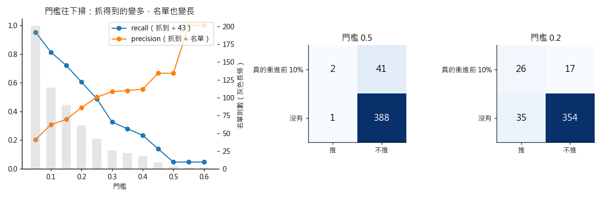

練習 11 - 加推名單的門檻
在本單元中，會介紹第 11 題背後的商業問題、它練的是哪一種資料分析，以及從資料到結論的完整做法、程式與圖表。建議先回 Hub - 資料分析練習案例庫 自己試著做一次，再來對照這一頁。
有人會這樣問你
編輯台一個月最多只能再加推兩百則左右，超過就做不完。哪些稿子最可能衝到當月流量前段？漏掉一則爆紅的很可惜，硬推一則沒人看的也不過浪費編輯一小時，你幫我排一份名單出來。
用到的資料：content_monthly_flat（L1 釋出的 content_monthly_2024_10.csv）
對應單元：預測會不會退訂（門檻不是統計決定的，是成本決定的）
這一題在商業上要回答什麼
模型給的是機率，真正要做的決定是「推哪幾則」，而且受限於編輯台的人力。門檻應該由「漏掉一則爆紅」和「誤推一則」的代價比來決定，而不是用套件的預設值。
這一題練的是哪一種資料分析
這一題練的是分類模型與決策門檻。用 confusion matrix 看每個門檻下抓到、漏掉、誤推各有幾則，把模型的排序能力（AUC）轉成一份做得完的名單。這是從預測走到處方性分析（prescriptive analytics）的那一步：不只說會怎樣，還說該怎麼做。
門檻表的每一列就是一張 confusion matrix。門檻 0.5 時 TP 2、FP 1、FN 41、TN 388，準確率 0.903，卻漏掉 43 則裡的 41 則；門檻降到 0.2，抓到的從 2 則變 26 則，召回率從 5% 升到 60%。見 Confusion Matrix 與誤判代價
門檻從 0.5 一路掃到 0.1，就是在一條線上找最好的點；決定停在哪裡的是「漏掉一則」和「誤推一則」的代價比，不是準確率。見 搜尋空間與河內塔
邏輯斯迴歸訓練時在壓低的是交叉熵（log loss）。這個模型在測試集上是 0.232，全部都猜基準比例是 0.324，差距就是模型真的學到的東西。見 從 Shannon 到 LLM
一步一步怎麼做
- 標籤定成「這則內容的 pv 有沒有落在當月前 10%」（切點是 1,390 次）。
- 特徵只准用發布那一刻就知道的欄位：content_type、section_name、is_paywalled、word_cnt、headline_len、has_number_in_headline——pv 以外的 uv、sessions、dwell_sec_total 都是同一個月的結果，不能當特徵。
- 資料切 30% 當測試集（分層抽樣、random_state=0），類別欄做 one-hot、數值欄標準化，跑預設設定的邏輯斯迴歸，拿到每一則的機率之後，把門檻從 0.5 一路往下掃到 0.1，每個門檻記一列「名單幾則／抓到幾則／誤抓幾則」，最後用一句成本敘述（漏掉一則爆紅約等於少掉一整天的流量，誤推一則約等於編輯多花一小時）挑門檻。
工具怎麼選 語言用 Python，因為 predict_proba 給的是機率不是是非題，換門檻只要改一個數字，不必重跑模型。
看完整程式（Python）
from _kmg import *
from sklearn.compose import ColumnTransformer
from sklearn.linear_model import LogisticRegression
from sklearn.metrics import accuracy_score, log_loss, roc_auc_score
from sklearn.model_selection import train_test_split
from sklearn.pipeline import make_pipeline
from sklearn.preprocessing import OneHotEncoder, StandardScaler
SEED = 0 # 案例指定：切測試集用 random_state=0
f = dedupe(flat()).reset_index(drop=True)
cut = f["pv"].quantile(0.9)
print("前 10% 的切點", float(cut))
y = (f["pv"] >= cut).astype(int)
X = f"content_type", "section_name", "is_paywalled", "word_cnt", "headline_len", "has_number_in_headline".copy()
X["is_paywalled"] = X["is_paywalled"].astype(int)
X["has_number_in_headline"] = X["has_number_in_headline"].astype(int)
def run(seed):
pre = ColumnTransformer([("c", OneHotEncoder(handle_unknown="ignore"), ["content_type", "section_name"]),
("n", StandardScaler(), ["word_cnt", "headline_len", "is_paywalled", "has_number_in_headline"])])
Xtr, Xte, ytr, yte = train_test_split(X, y, test_size=0.3, random_state=seed, stratify=y)
m = make_pipeline(pre, LogisticRegression(max_iter=2000)).fit(Xtr, ytr)
return ytr.values, yte.values, m.predict_proba(Xte)[:, 1]
def cm(yte, p, t):
pred = p >= t
return {"TP": int((pred & (yte == 1)).sum()), "FP": int((pred & (yte == 0)).sum()),
"FN": int((~pred & (yte == 1)).sum()), "TN": int((~pred & (yte == 0)).sum())}
ytr, yte, p = run(SEED)
c5, c2, c1 = cm(yte, p, 0.5), cm(yte, p, 0.2), cm(yte, p, 0.1)
print("測試集則數", len(yte))
print("測試集正例", int(yte.sum()))
print("門檻 0.5 名單則數", c5["TP"] + c5["FP"])
print("門檻 0.5 抓到", c5["TP"])
print("門檻 0.5 準確率", float(accuracy_score(yte, p >= 0.5)))
print("門檻 0.2 名單則數", c2["TP"] + c2["FP"])
print("門檻 0.2 抓到", c2["TP"])
print("門檻 0.2 誤推", c2["FP"])
print("門檻 0.1 名單則數", c1["TP"] + c1["FP"])
print("門檻 0.1 抓到", c1["TP"])
print("門檻 0.1 recall", c1["TP"] / 43)
print("AUC", float(roc_auc_score(yte, p)))
print("門檻 0.2 名單換算成全月則數", (c2["TP"] + c2["FP"]) / len(yte) * len(f))
lists = {}
for s in (0, 1, 7, 42, 2024):
_, yt, ps = run(s)
lists[s] = int((ps >= 0.2).sum())
print("換 random_state 重切，門檻 0.2 的名單則數：" + "、".join("%d → %d 則" % kv for kv in lists.items()))
print("換種子後 門檻 0.2 名單最少", min(lists.values()))
print("換種子後 門檻 0.2 名單最多", max(lists.values()))
# 課堂概念：confusion matrix 與交叉熵
print("門檻 0.5 confusion matrix（TP/FP/FN/TN）", [c5[k] for k in ("TP", "FP", "FN", "TN")])
print("門檻 0.2 confusion matrix（TP/FP/FN/TN）", [c2[k] for k in ("TP", "FP", "FN", "TN")])
print("門檻 0.2 precision", c2["TP"] / (c2["TP"] + c2["FP"]))
print("門檻 0.2 準確率", (c2["TP"] + c2["TN"]) / len(yte))
print("模型的交叉熵（log loss）", float(log_loss(yte, p)))
print("全部猜基準比例的交叉熵", float(log_loss(yte, np.full(len(yte), ytr.mean()))))
print("標籤本身的 entropy（bits）", entropy_bits([yte.mean(), 1 - yte.mean()]))
recall05 = c5["TP"] / 43
acc05 = accuracy_score(yte, p >= 0.5)
ts = np.round(np.arange(0.05, 0.61, 0.05), 2)
tab = pd.DataFrame([cm(yte, p, t) for t in ts], index=ts)
tab["名單"] = tab["TP"] + tab["FP"]
fig, ax = plt.subplots(1, 3, figsize=(12, 4), gridspec_kw={"width_ratios": [2, 1, 1]})
ax[0].plot(ts, tab["TP"] / 43, marker="o", label="recall（抓到 ÷ 43）")
ax[0].plot(ts, tab["TP"] / tab["名單"].where(tab["名單"] > 0), marker="o", label="precision（抓到 ÷ 名單）")
ax2 = ax[0].twinx()
ax2.bar(ts, tab["名單"], width=0.03, alpha=0.25, color="#999999")
ax2.set_ylabel("名單則數（灰色長條）")
ax[0].set_xlabel("門檻")
ax[0].set_title("門檻往下掃：抓得到的變多，名單也變長")
ax[0].legend(loc="upper right")
for k, (t, c) in enumerate([(0.5, c5), (0.2, c2)]):
a = ax[k + 1]
mat = np.array([[c["TP"], c["FN"]], [c["FP"], c["TN"]]])
a.imshow(mat, cmap="Blues")
for i in range(2):
for j in range(2):
a.text(j, i, str(mat[i, j]), ha="center", va="center", fontsize=13,
color="white" if mat[i, j] > 200 else "black")
a.set_xticks([0, 1], ["推", "不推"])
a.set_yticks([0, 1], ["真的衝進前 10%", "沒有"])
a.set_title("門檻 %.1f" % t)
save_fig(fig, "ex11_threshold.png")
程式開頭的 from _kmg import * 載入共用的讀檔、去重、換幣別與畫圖函式，內容放在 練習 01 - 月會上的則數對不對。
結果會看到什麼
測試集 432 則裡有 43 則屬於前 10%。用預設門檻 0.5，模型只點名 3 則、抓到 2 則，recall 只有 5%，可是準確率有 90.3%——它靠「幾乎什麼都不推」拿到這個分數。把門檻降到 0.2，名單變成 61 則、抓到 26 則，recall 從 5% 跳到 60%，代價是誤推 35 則；再降到 0.1 會抓到 35 則（recall 81%），但名單膨脹到 114 則，換算回整個月超過編輯台的人力上限。AUC 0.88 表示模型的排序本身是有用的，壞掉的只是那個預設門檻。0.2 附近的名單約等於全月 203 則，剛好卡在兩百則的上限，這才是能執行的答案。換一個 random_state 重切，門檻 0.2 的名單會在 61 到 81 則之間變動，數字會晃，但「0.5 幾乎不推、0.2 附近才抓得到」這個結論不變。
- 換 random_state 重切，門檻 0.2 的名單則數：0 → 61 則、1 → 81 則、7 → 72 則、42 → 70 則、2024 → 81 則
圖怎麼讀

左圖把門檻從 0.6 往下掃到 0.05：藍線是抓到的比例（recall），橙線是名單裡真的衝進前 10% 的比例（precision），灰色長條是名單則數。右邊兩張是門檻 0.5 與 0.2 的 confusion matrix。繼續練習
上一題 練習 10 - 發稿前預估流量的模型、下一題 練習 12 - 準確率 99% 的模型，或回到 Hub - 資料分析練習案例庫 挑別的題目。
學生版｜更新於 2026-09-13 11:59